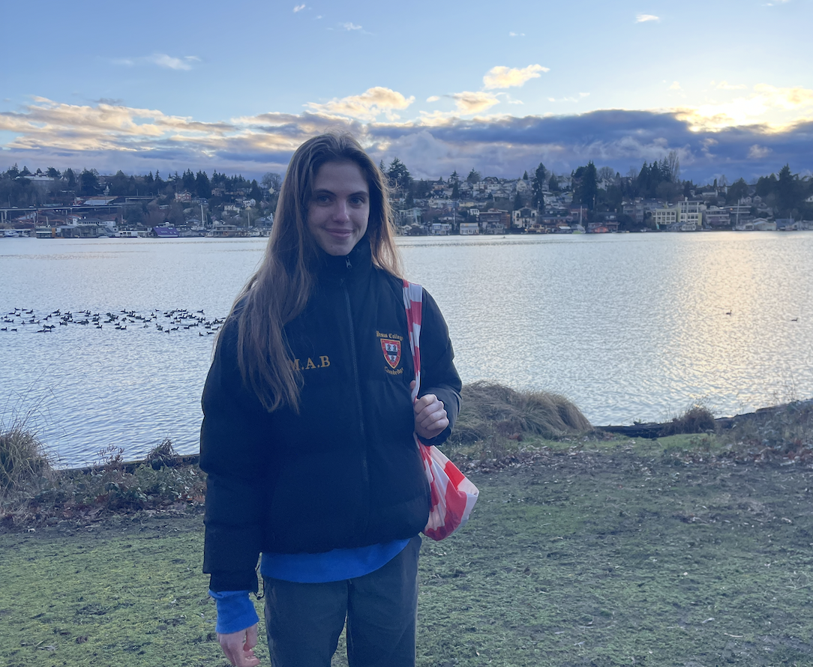
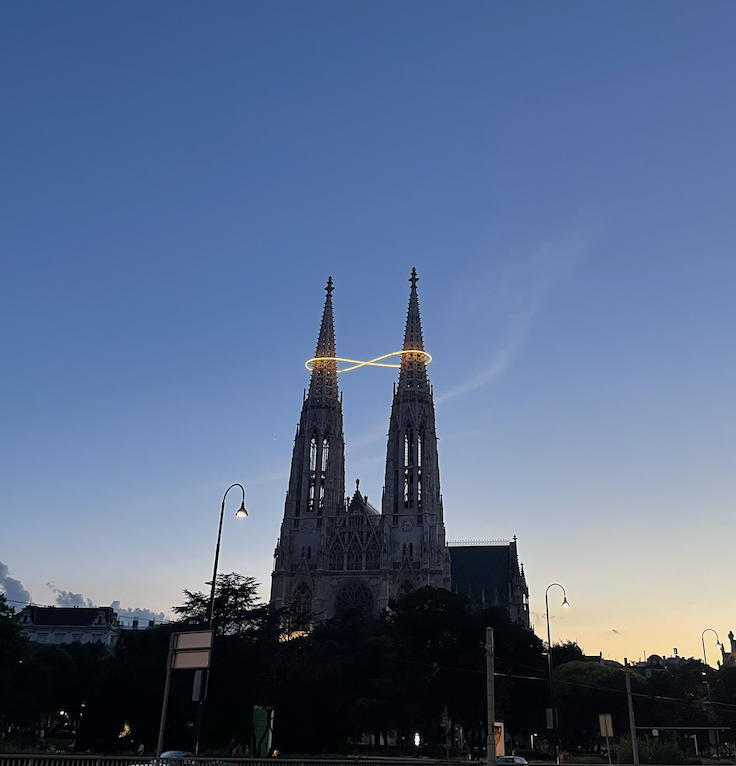

I'm a computer science PhD student at the University of Washington (Paul G. Allen School) advised by Professor Jacob Wobbrock.
My work focuses on designing and evaluating accessible creativity support tools (CSTs) and responsible AI. I am currently exploring the role of emotional safety in CST design and how creativity itself can promote accessibility and well-being. Accessibility is often viewed as a constrained way to accommodate select groups and centers on replicating normative experiences; my research expands accessibility beyond compliance frameworks toward approaches that enable everyone to meet their needs, pursue education, and express creativity. I’ve published at ASSETS and FDG, with work under review at CHI and ICSE. My work has been recognized by the Computing Research Association (CRA) with the CRA Outstanding Undergraduate Researcher Honorable Mention and through scholarship awards from Amazon and PG&E.
Before this, I graduated from Pomona College with a Bachelor of Arts in Computer Science, working under the mentorship of Professor Jingyi Li and Jane L. E. During my undergraduate studies, I spent time as an exchange student at Swarthmore College and Jesus College, Cambridge. I also spent three summers as a software development intern at Amazon.
publications
-
2025
Expanding Norms, Negotiating Bodies: How Artists with Disabilities Perceive and Use Creative Tools
Miriam Brody, Izabella Rodrigues, Jane L. E, Jingyi Li
Proceedings of the 27th International ACM SIGACCESS Conference on Computers and Accessibility (ASSETS '25)
-
2024
RetroFit: Post-Facto Accessibility for Retro Games
Joseph Carter Osborn, Katiana Wieser, Miriam Brody
Proceedings of the 19th International Conference on the Foundations of Digital Games (FDG '24)
making
-
A Zine About AI History: Generative Frictions
Exploring past and present conversations about technology between Terry Winograd and Lucy Suchman
-
A Short Story: Portrait of a Jamstress
A short story with lots of jam, oh and there's also a cat named Soufflé
-
The Garden Cart
Introducing mobility into gardens
snapshots
-
rowing in cambridge -

-

vienna days
Some more about me: I'm a creative writer and poet, and I love improv! I also have been practicing zen mediation for over 19 years.
Checkout my blog thecsphd.
Please reach out if you are interested in collaborating as researchers or artists.